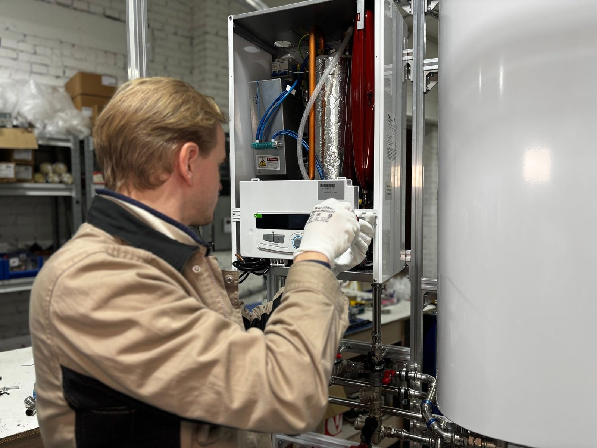
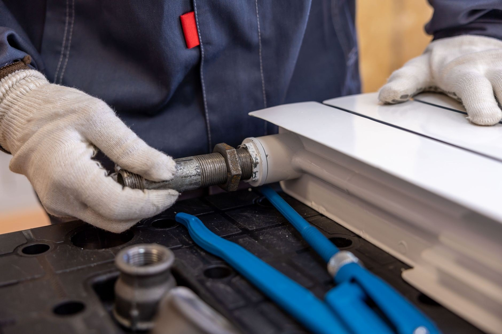
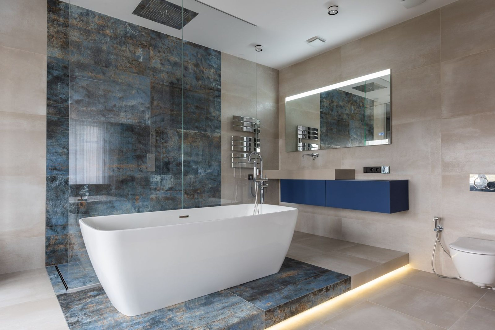
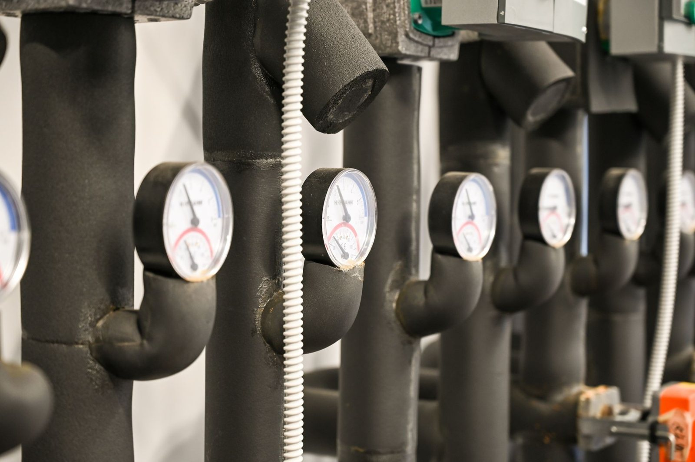

Zakres
robót
Sześć rzeczy, które robię na co dzień. Przy każdej cenę znasz przed robotą, a wycena jest bezpłatna.
Zapytaj o wycenęOd awarii, przy której liczy się każda godzina, po instalację w nowym domu, którą planujemy na spokojnie. Jeżdżę z pełnym wyposażeniem, więc większość napraw kończę za jednym razem.

Awarie i przecieki
Woda leje się tam, gdzie nie powinna? Zakręć główny zawór i dzwoń. Przyjeżdżam z narzędziami i częściami na większość przypadków, znajduję przyczynę i naprawiam to, co faktycznie puściło - nie zaklejam objawów. Zanim wyjdę, sprawdzam, czy jest sucho. Dopiero wtedy koniec roboty.

Udrażnianie rur i kanalizacji
Zatkany zlew, brodzik albo WC to zwykle robota na jedną wizytę. Sprawdzam, gdzie siedzi zator, i dobieram narzędzie do rury, a nie odwrotnie - czasem wystarczy rozebrać i wyczyścić syfon. Jak zator wraca co miesiąc, szukam przyczyny głębiej, zamiast przepychać w kółko.

Wymiana i montaż kotłów
Stary kocioł bierze coraz więcej gazu albo wysiada w środku zimy? Wymieniam kotły na kondensacyjne i podłączam je tak, żeby odbiór przeszedł bez poprawek. Doradzę model, który ma sens przy Twoim metrażu - a nie ten, na którym najwięcej się zarabia.

Instalacje wod-kan
Nowa instalacja to robota, której po skończeniu nie widać - i właśnie dlatego musi być zrobiona porządnie, zanim zniknie w ścianie. Ciśnieniową próbę szczelności robię przy Tobie, z manometrem, nie „na oko”. Poprawki po zalaniu zawsze kosztują więcej niż porządne podejścia.

Montaż łazienek
Remont łazienki stanął na ostatniej prostej? Robię biały montaż od baterii po pralkę i sprawdzam każde połączenie, zanim zamknę za sobą drzwi. Stare wyposażenie zabieram od razu, chyba że chcesz je zatrzymać. Termin ustawiam tak, żeby nie blokować innych ekip.

Centralne ogrzewanie
Grzejniki grzeją nierówno, bulgoczą albo nie łapią temperatury? Płuczę i odpowietrzam instalacje, wymieniam grzejniki i głowice, ustawiam ogrzewanie tak, żeby grzało równo w całym domu, a nie głównie przy kotle. Różnicę czuć pierwszej zimy - i w pokojach, i na rachunku.